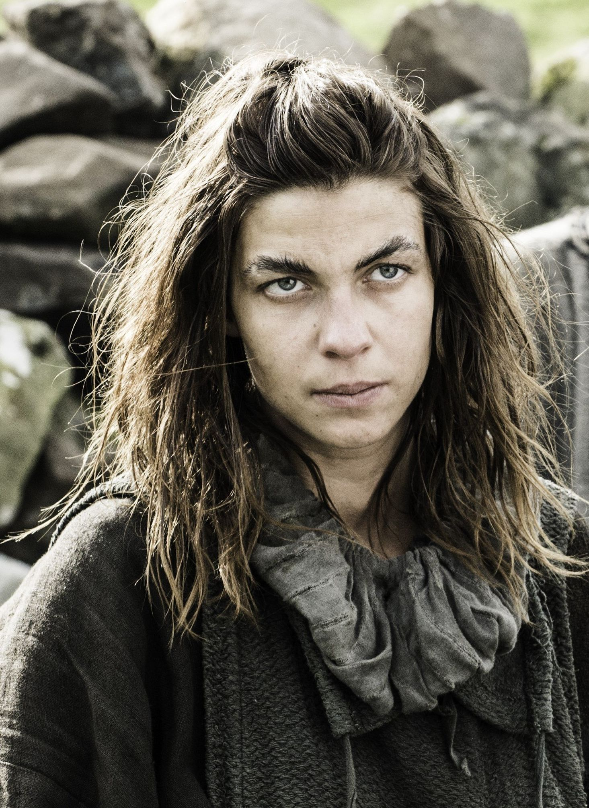
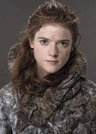
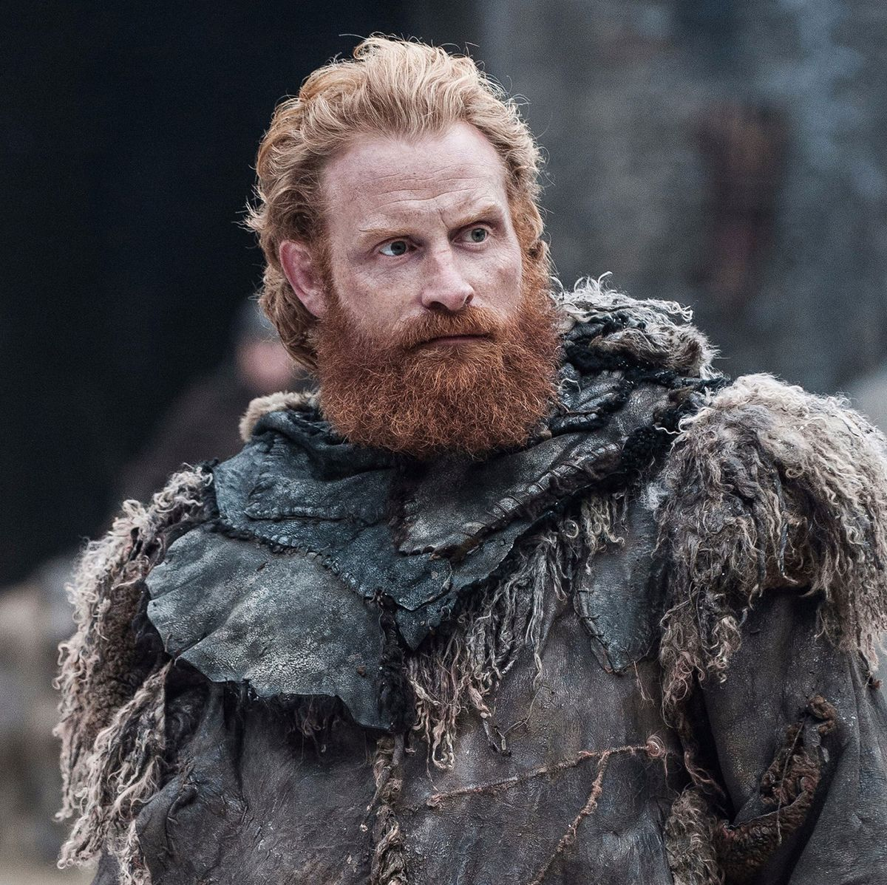
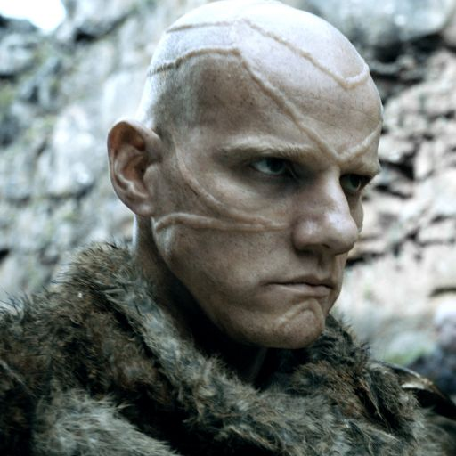

La gente al sur del Muro los ve como bárbaros y les llaman salvajes, mientras que el pueblo libre considera que éstos son débiles y blandos
Pueblo Libre
Lema: Los hombres pueden raptar hijas, pero nunca esposas de otros hombres.
Ubicación: Mas allá del Muro

El Pueblo Libre desciende de los Primeros Hombres que llegaron a Poniente durante la Era del Amanecer. Debido a su aislamiento del resto de Poniente, los salvajes permanecen como personas libres, sin estado ni nobleza ni reyes.

Mance Rayder: Rey más allá del Muro para el Pueblo Libre y anteriormente hermano juramentado de la Guardia de la Noche. Capturado, por la guardia Mance es quemado por Melisandre, pero terminando muriendo por una flecha arrojada por Jon Snow en un acto de compasión.

Osha: Es tomada prisionera cuando viajaba con un grupo de salvajes y desertores de la Guardia de la Noche. Es llevada hasta Invernalia, donde comienza a trabajar como criada y traba confianza con el pequeño Bran Stark. Cuando Theon Greyjoy y sus hombres conquistan Invernalia, Osha decide jurarle lealtad. Tiempo después, ayuda a ocultarse a Bran, Rickon. Cuando es capturada junto a Rickon por Ramsey, intenta seducirlo para poder asesinarlo pero Ramsey se le adelanta y le clava un cuchillo en la garganta.

Jojen Reed: Tiene el don de la vista verde, los sueños proféticos. Es el compañero místico de Bran Stark, hace todo lo posible por mantenerle a salvo junto a su hermana Meera interpretando toda la información que recibe de sus premoniciones. Muere apuñalado por uno de los espectros, a pesar de la lucha de Hodor y Meera, momentos antes de que Bran Stark encontrara al Cuervo de Tres Ojos. Muere en brazos de su hermana Meera, que le remata para que no sufra.

Meera Reed: Su padre le enseñó cómo pelear con una red, una fisga, un cuchillo largo de bronce y una lanza tridente. Es una cazadora hábil. Ayuda junto a su hermano a que Bran se encuentre con el Cuervo de Tres Ojos.

Ygritte: Mujer salvaje, de gran hermosura, que es hecha prisionera por Jon Snow tras no ser capaz de matarla. Jon acompaña a Ygritte y a un grupo de hombres salvajes en una larga expedición, escalando el Muro y penetrando en las tierras del Norte, con el objetivo de atacar a la Guardia de la Noche por la espalda. Durante la batalla entre salvajes y guardias de la Noche,muere de un flechazo, Ygritte se despide de Jon con la frase "No sabes nada, Jon Snow".

Tormund: Es uno de los líderes del Pueblo Libre, es apodado con el sobrenombre de "Tormund Matagigantes". Tiene un carácter jovial, y disfruta bastante de la comida y la bebida. U saqueador aficionado a contar historias.Entabla una buena amistad con Jon Snow quien le entrega el castillo de la Guardia a Tormund para su clan y como asentamiento de su poder.

Styr: Hombre alto y sin orejas. Siempre va afeitado, es calvo, y tiene la nariz recta y ojos grises. Como arma porta una lanza de arciano adornada con una cabeza de bronce. Lo asesina Jon Snow durante la batalla entre salvajes y guardias de la Noche

Varamyr Seispieles: También conocido como Orell. Fue un salvaje y un cambiapieles que participó en el asalto de Mance Rayder al Muro. Controlaba tres lobos, un oso polar y un gatosombra. En la Batalla del Castillo Negro, Melisandre mató al águila con su magia de fuego, haciendo que Varamyr se vuelva loco de dolor, matando los restos de Orell dentro del águila.

Karsi fue una mujer del acero salvaje y líder de un clan del Pueblo Libre. Tras la derrota del pueblo Libre en la batalla del Castillo Negro, se une a los salvajes que buscan refugio en Casa Austera. Mientras deja a sus hijas en una barca que las llevará los barcos se percata, junto al resto de salvajes, de la llegada de los Otros y de los espectros. Intenta frenar el avance de los espectros y lucha con valentía, pero al contemplar a un grupo de niños convertidos en espectros se paraliza y es asesinada.